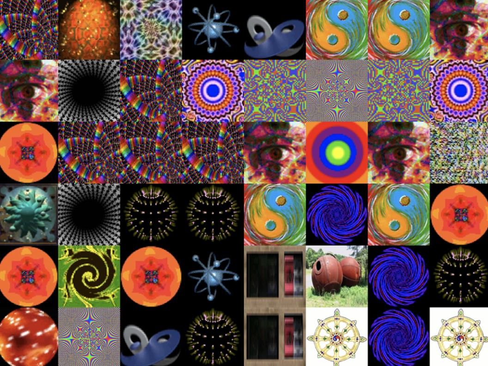
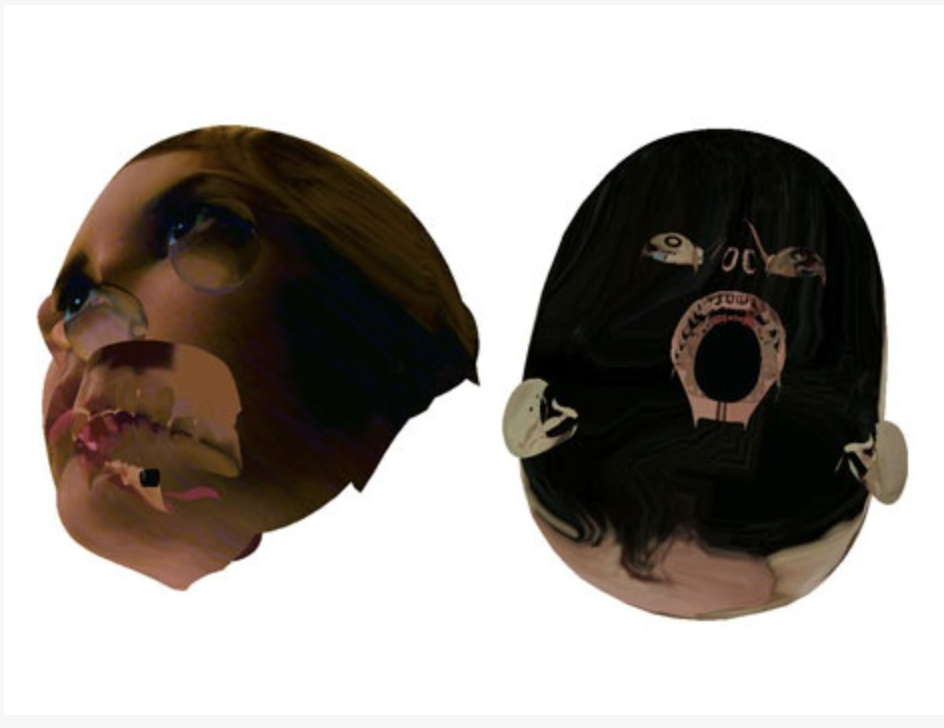
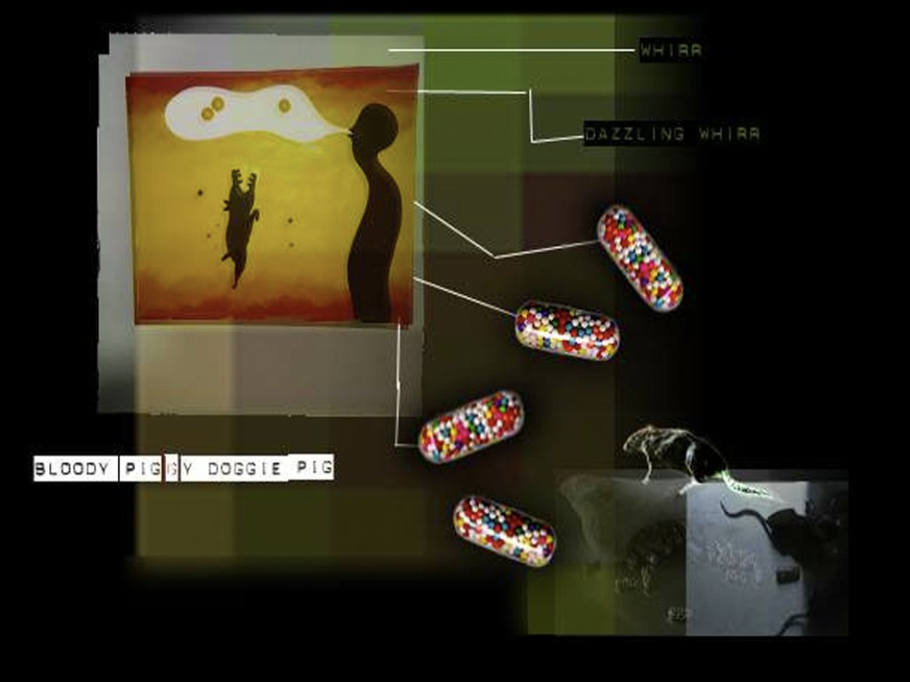
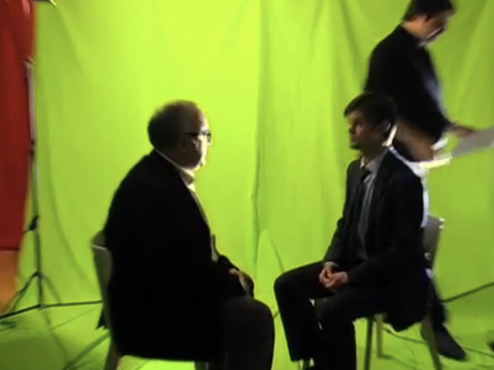
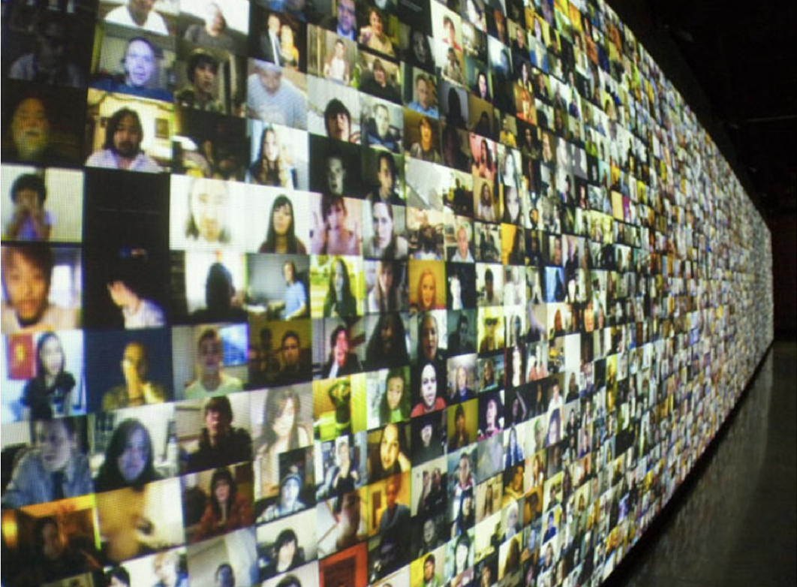
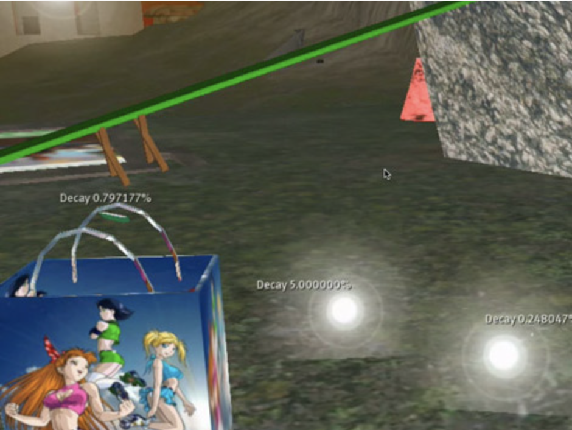
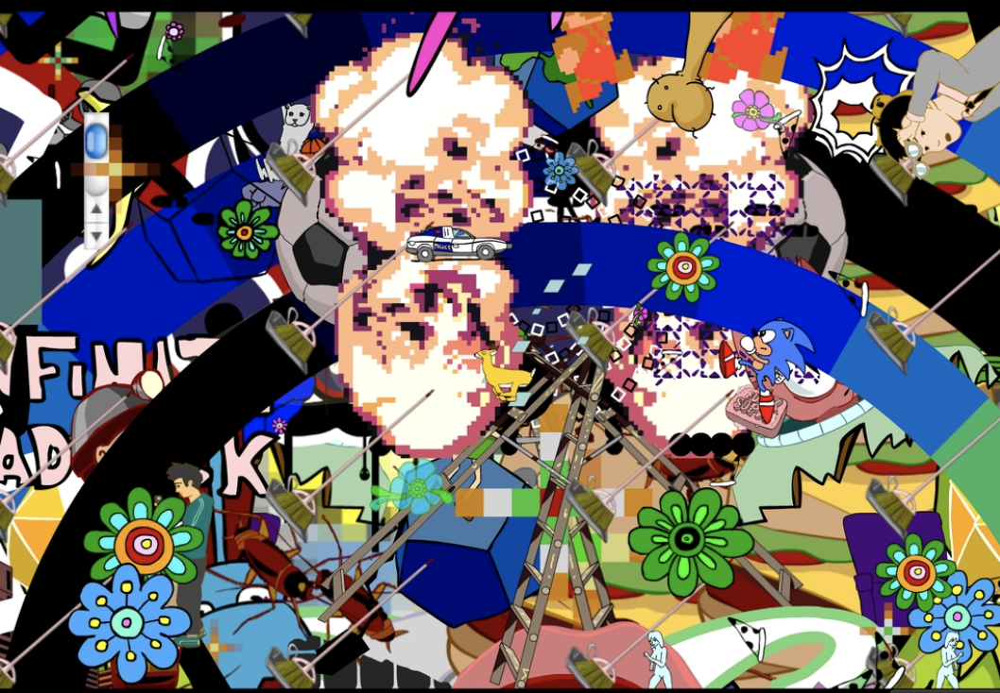
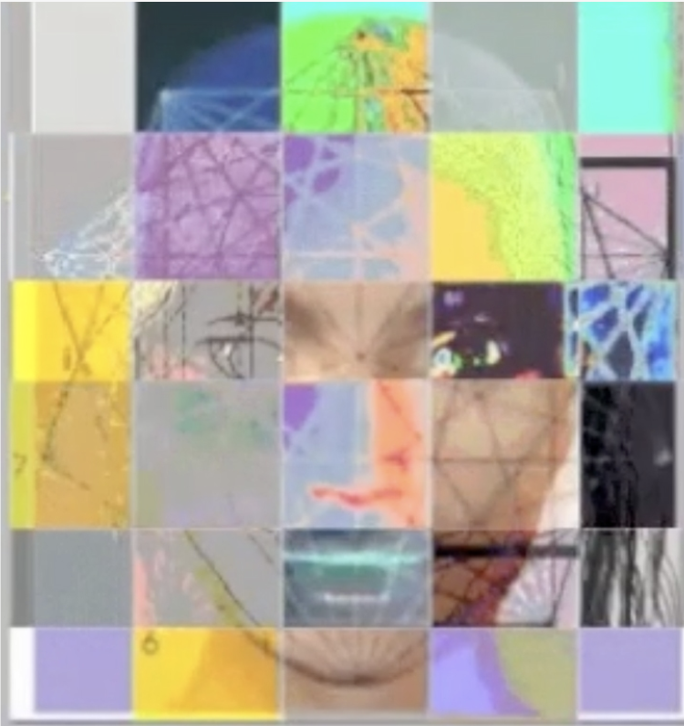

CSS FLOATS
GALLERY 8 WEB ART PROJECTS

=-ap-prox::val::atr=-, ui uuii, 2008

Dreamcaptchas, Kai Altman, 2008

Love Letters from the World of Awe, Yael Kanarek, 1996

Experimental Philosophy Demo, Ben Coonley, 2008

Hello World! or: How I Learned to Stop Listening and Love the Noise , Christopher Baker, 2008

SL Dumpster, eteam, 2008

AGOD, Throne Brandt, 2013

Y o u r s F a c e o r M i n e ? A n o n y m i t y, Reginald Brooks, 2013